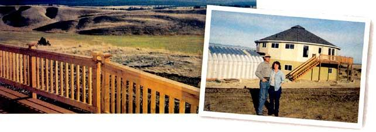
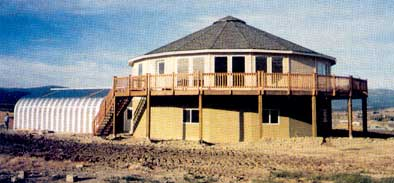
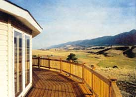

Home (Kit) On The Range
By Paul Steffy
February/March 2002
Story and photos by Paul Steffy · Eureka, Montana
Our initial plan was for me to retire at 55. We'd buy a large pickup truck and a fifth-wheel trailer and would travel the United States indefinitely - a retirement many couples enjoy immensely. After doing our homework and considering the options available in this lifestyle, we changed our minds. The value of a truck or trailer drops immediately after you buy it, and even though you're using the vehicle or trailer, it's an expensive proposition.
At this point we changed the plan: We would buy land and build a home far from the maddening crowds of Southern California.
Our next step was to decide where to live. My wife Sherri and I have traveled extensively and know what type of terrain and geography please us. I ordered literature on eight states from a national real-estate chain. After eliminating several options, we decided on Montana, land of Charley Russell and Fred Remington, of mountains and pine trees, abundant wildlife and scant people, rich in history and really cold winters.
At that time, neither of us had actually visited Montana. So checkbook in hand, we flew to Missoula, rented a car and began our trek to find a spot to spend the rest of our lives. The idea of long winter months spent cloistered indoors doesn't appeal to everyone. That's fine with us.
We eventually settled on Eureka, a town that seems to still be cruising in the 1950s. With a population of 1,500, Eureka lies eight miles from the Canadian border. Its small-town atmosphere, clean air, semi-arid climate, friendly people, superb hunting, fishing and wildlife-viewing year-round were just what we wanted.
After locating land, the real work began. We purchased 14 acres on a hilltop facing north. The hill is 200 feet above the surrounding countryside and offers our "million-dollar, 360-degree view."
In June 2001, we each left well paying jobs with good benefits in the San Diego area. (I retired after 20 years.) I had worked weekends, holidays and odd hours for a mass transit system. Commuting was easy for me, but Sherri's driving time had reached 40 minutes to drive a scant eight miles. It was time to go. We sold our home, cashed in every available resource and went forward.
Anyone looking for land in almost any state can find "bargain" prices in the $500 to $1,000 per acre range. But beware: Some power companies charge $15,000 to $20,000 per mile to provide power. Telephone lines and roads are expensive, as well. Don't be fooled into buying cheap land only to discover it will cost $30,000 to $50,000 to dig a well or septic system and provide other necessities before you can build your dream home. Even if you choose to avoid the power company and have a cell phone, purchasing the off-grid equipment can cost thousands of dollars, and cell phones don't always work in remote areas. (They do, luckily, in nearly all areas around our home.)
Our land came with a road, well, phone line and electricity hook-up. So although we paid more initially to have utilities and the gravel road to our house, the upfront expense was worth it to us.
Some advice to those wishing to follow our example is to know all your construction expenses in advance. Ask your contractor for all estimates up front. Get time estimates for completion of each stage of construction
Most subcontractors arrive on time and do their job in a reasonable amount of time. But not all do. We hired a roofer who, after 2 1/2 weeks, finally showed up one afternoon - without a ladder. We finally fired him but by then had lost valuable time. Each stage of construction follows the previous, so when one is delayed, others can't begin. I cannot stress enough: Know your expenses and follow a timeline.
After looking at various costs, such as hiring an architect, we decided to buy a kit for the major part of our home. The house is two stories with 4,000 square feet on both levels. The design is essentially circular, which allows for more efficient heating and cooling, as well as making the most of our 360-degree view.
The house kit went together well, and we were happy, for the most part, with the support we got from the company. The manufacturer says a half dozen workers who know how to construct it can have the kit up and waterproof within a week. The guys I hired hadn't built a structure like this before, but they had it up in a month. The design has 20, 8x8-foot exterior panels. Each attaches at an angle of 18 degrees, a logistical challenge. When we were finished, it was only off by about three-quarters of an inch - unbelievable.
Our contractor called the company several times to get more information, which brings me to the next bit of advice: If you use a kit, make sure the business has a toll free number and someone knowledgeable to advise you over the phone. The company we used also furnished a roof jack for the duration of the project, and this was a big help.
Sherri's driving time had reached 40 minutes to drive a scant eight miles. It was time to go.
Having the kit delivered was another lesson in the necessity of getting the facts up front. We didn't learn until almost the shipping date that the kit required not one but two semitrailer loads, which doubled our shipping costs.
We paid for two truckloads, only to find out the company had switched and shipped by rail, which didn't cost as much. However, because our contract didn't cover such a change, the company kept the difference. Find out ahead of time what your transport needs will be and get in writing that you'll be re funded any difference in actual shipping costs. The 50 cents per mile savings add up quickly and the money won't be in your pocket.) Don't just send the shipping charges, or you might give away hundreds of dollars
Accomplishing this job in rural Montana was significantly different from doing a similar job in an urban area. Skilled labor is limited here. In the city, if someone doesn't show up, you open the phone directory and find another carpenter Here, you have to be more patient.
Whether or not you're in a city, you need to get all estimates for work in writing. People here don't like to do this they want to do everything by verbal agreement. But we noticed that the ones with verbal agreements ended up wanting to charge us more, and the ones with written estimates stuck with the the original price. So, get it in writing.
By mid-September our drywall was nearly completed. Next came painting, floor coverings, cabinets, light fixtures, interior doors , drapes and, finally, move-in. I did most of the interior finish work myself. We had to rent a two-bedroom house for an extra six weeks, an unplanned expense So our plans to have horses, irrigation and an outbuilding have been set aside, at least temporarily due to the need to control costs
We've had our share of temporary inconvenience. For instance, we completed the garage to June 2000 to store the kit through the winter, then ended up using the garage as our TV and computer room for several months during construction. But this and other inconveniences were a small price to pay. All things considered, we're glad we moved from an area with 3.5 million people to a small town in Montana. It's a great place for those of us who appreciate seasonal changes - and wildlife in greater numbers than people.
You can write Paul and Sherri in care of Mother Earth News, 1503 SW 42nd St.; Topeka, KS 66609-1265. Or you can email them at homeatlast@montanasky.net . Letters will be considered for publication.
|
 A million-dollar view greets Paul and Sherri every morning. The circular portion of their home was a kit. |
 The kit home is essentially circular, built from 20, 8x8-foot panels that attach at an 18degree angle. The crew took a month to put the structure up. |
 The deck has 1,040 square feet and is made of redwood, which Paul and Sherri are going to leave untreated, in keeping with their desire never to paint eaves or railings again. |
|
 |
|
|